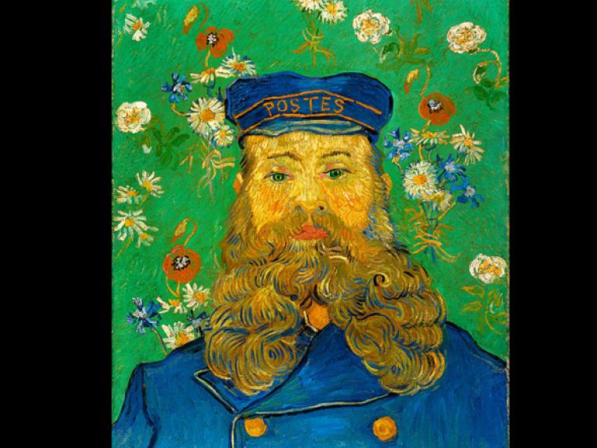
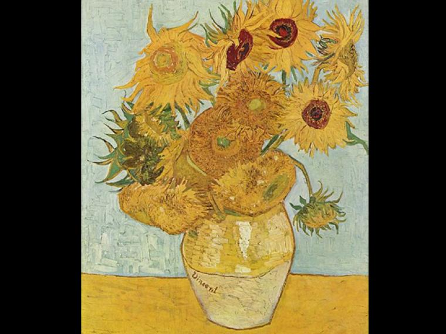
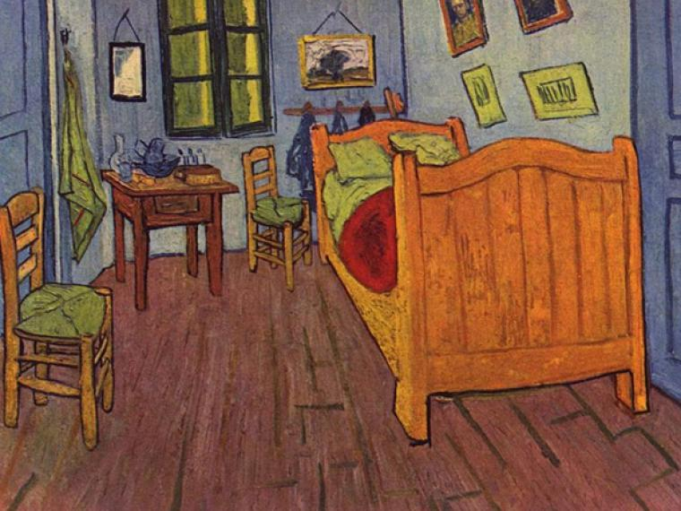
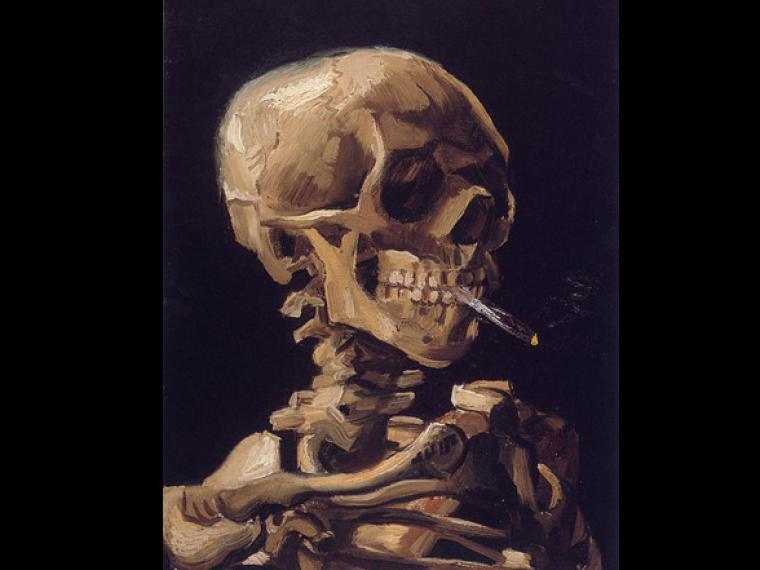

Vincent Van Gogh
Vincent van Gogh, por quien el color era el símbolo principal de expresión, nació el 30 de marzo de 1853 en Groot-Zundert de Holanda. El hijo de un pastor, criado en una atmósfera religiosa y refinada, Vincent era muy emocional y no tenía confianza en sí mismo. Entre 1860 y 1880, cuando decidió finalmente ser artista, Van Gogh había tenido dos amores inadecuados y infelices y había trabajado sin éxito como empleado en una librería, vendedor de arte, y predicador en Le Borinage (una región aburrida de minera en Bélgica), donde fue despedido por “exceso de celo.”
Se quedó en Bélgica a estudiar el arte, dedicado para dar felicidad creando belleza. Las obras de este período temprano en Holanda son pinturas de género muy iluminadas y de tonos sombríos de las que la más famosa es Los comedores de papas (1885). En ese año Van Gogh fue a Antwerp donde descubrió las obras de Rubens y compró muchos grabados japoneses, sus obras mas populares son:
La noche estrellada

Retrato de Joseph Roulin

Los girasoles

La habitación

Calavera fumando

Menu